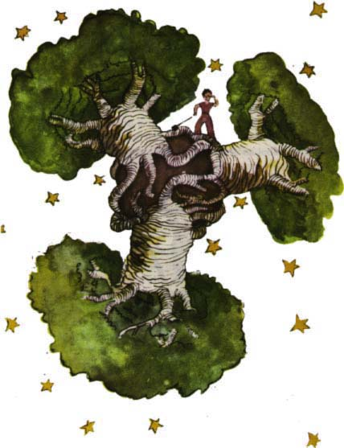
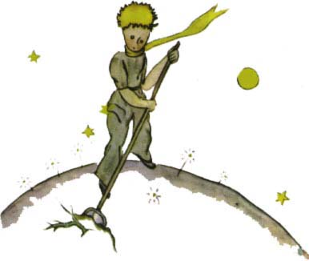

Tentokrát jsem za to vdìèil zase beránkovi, nebo» malý princ se mì náhle zeptal, jako by se ho zmocnily vá¾né pochyby:
"Je to pravda, ¾e beránci okusují keøe, viï?"
"Ano, okusují."
"Ach, to jsem rád!"
Nepochopil jsem, proè je tak dùle¾ité, aby beránci okusovali keøe, ale malý princ dodal:
"Okusují tedy i baobaby?"
Upozornil jsem malého prince, ¾e baobaby nejsou keøe, ale stromy veliké jako kostely, a ¾e i kdyby vzal s sebou celé stádo slonù, nedokázali by se¾rat jediný baobab. My¹lenka na stádo slonù malého prince rozesmála:
"Museli by stát jeden na druhém..."
Ale moudøe poznamenal:
"Ne¾ baobaby vyrostou, jsou malé."
"Správnì. A proè by mìli tvoji beránci okusovat malé baobaby?"
"To je divná otázka!" odpovìdìl, jako by ¹lo o nìco samozøejmého. A stálo mì to hodnì námahy, abych porozumìl tomuto problému.
A skuteènì, na planetì malého prince byla jako na v¹ech planetách dobrá tráva i plevel. Tedy z dobrých semen dobrá tráva a ze ¹patných semen býlí. Ale semena jsou neviditelná. Spí hluboko v zemi, a¾ nìkterému napadne se probudit. Tu se protáhne a k slunci bojácnì ra¹í nejprve rozko¹ný a ne¹kodný malý výhonek. Je-li to øedkvièka nebo rù¾e, mù¾eme je nechat, a» si rostou. Je-li to plevel, musíme ho vytrhnout hned, jak ho rozeznáme. Nu, a na planetì malého prince byla stra¹ná semena... semena baobabù. Pùda planety byla jimi zamoøena. A pustíme-li se do baobabu pøíli¹ pozdì, u¾ nikdy se ho nezbavíme. Zaroste celou planetu. Provrtá ji svými koøeny. A je-li planeta pøíli¹ malá a baobabù pøíli¹ mnoho, roztrhnou ji.
"To je vìc káznì," øekl mi pozdìji malý princ. "Kdy¾ dám ráno do poøádku sebe, musím udìlat poøádek na planetì. Je tøeba se pøinutit a pravidelnì vytrhávat baobaby, hned jak je rozeznáme od rù¾í, kterým se moc podobají, kdy¾ jsou je¹tì malièké. Je to práce hroznì nudná, ale je velice snadná."
Jednou mi poradil, abych se to sna¾il pìknì nakreslit, aby to u nás dìti dobøe pochopily. "Budou-li jednoho dne cestovat," øekl, "mù¾e se jim to hodit. Nìkdy to nevadí, kdy¾ se práce odlo¾í na pozdìji. Ale u baobabù je to v¾dycky katastrofa. Já ti poznal jednu planetu... Tam bydlel lenoch. Zanedbal tøi keøe..."

Nakreslil jsem tedy tu planetu podle pokynù malého prince. Nerad dìlám mravokárce, ale nebezpeèí baobabù je tak málo známé a riziko, kterému se vystavuje ten, kdo by na nìjaké planetce zabloudil, je tak velké, ¾e tentokrát dìlám výjimku ve své zdr¾enlivosti a øíkám: "Dìti, dejte pozor na baobaby!" S touto kresbou jsem si dal proto tolik práce, abych varoval své pøátele pøed nebezpeèím, v jeho¾ blízkosti ji¾ dlouho ¾ijí - stejnì jako já - a ani o tom nevìdí. Pouèení, které jsem dal, stálo za tu námahu. Zeptáte se snad: Proè nejsou v této knize jiné kresby tak velkolepé jako kresba baobabù? Odpovìï je velmi prostá: Zkou¹el jsem to, ale nepodaøilo se mi to. Kdy¾ jsem kreslil baobaby, hnala mì k tomu jakási vnitøní nutnost.
